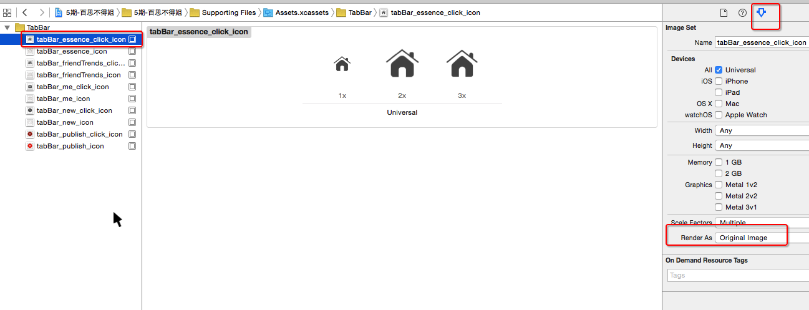
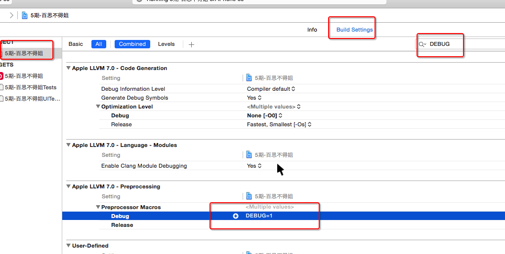
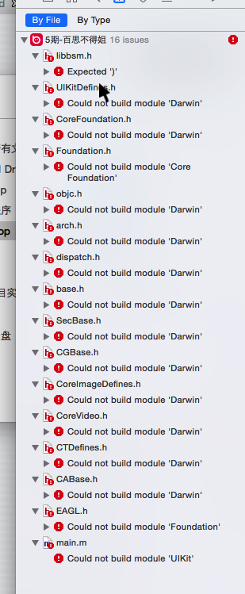

- Introduction
- 1. UI部分
- 2. OC 语法
- 3. IOS 编程
- 4. 百思不得姐专题
- Published using GitBook
TabBar配置、颜色说明和pch文件设置
从iOS9开始的常见报错
Application windows are expected to have a root view controller at the end of application launch
- 从iOS9开始, 在
程序启动完毕那一刻显示出来的窗口必须要设置根控制器
应用程序的图标
- 旧项目中的图标只要符合1个条件即可
- 图片名叫做Icon.png
有些图片显示出来会自动渲染成蓝色
比如
- 设置tabBarItem的选中图片
vc.tabBarItem.selectedImage = image;
- 设置UIButtonTypeSystem样式按钮的image时
UIButton *btn = [UIButton buttonWithType:UIButtonTypeSystem];
[btn setImage:image forState:UIControlStateNormal];
解决方案
- 再次产生一张不会进行渲染的图片
// 加载图片
UIImage *tempImage = [UIImage imageNamed:@"tabBar_essence_click_icon"];
// 产生一张不会进行自动渲染的图片
UIImage *selectedImage = [tempImage imageWithRenderingMode:UIImageRenderingModeAlwaysOriginal];
vc.tabBarItem.selectedImage = selectedImage;
- 直接在xcassets文件中配置
设置TabBarItem的文字属性
- 直接设置每一个tabBarItem对象
// 普通状态下的文字属性
NSMutableDictionary *normalAttrs = [NSMutableDictionary dictionary];
normalAttrs[NSFontAttributeName] = [UIFont systemFontOfSize:14];
normalAttrs[NSForegroundColorAttributeName] = [UIColor grayColor];
[vc.tabBarItem setTitleTextAttributes:normalAttrs forState:UIControlStateNormal];
// 选中状态下的文字属性
NSMutableDictionary *selectedAttrs = [NSMutableDictionary dictionary];
selectedAttrs[NSForegroundColorAttributeName] = [UIColor darkGrayColor];
[vc.tabBarItem setTitleTextAttributes:selectedAttrs forState:UIControlStateSelected];
// 字典中用到的key
1.iOS7之前(在UIStringDrawing.h中可以找到)
- 比如UITextAttributeFont\UITextAttributeTextColor
- 规律:UITextAttributeXXX
2.iOS7开始(在NSAttributedString.h中可以找到)
- 比如NSFontAttributeName\NSForegroundColorAttributeName
- 规律:NSXXXAttributeName
- 通过UITabBarItem的appearance对象统一设置
/**** 设置所有UITabBarItem的文字属性 ****/
UITabBarItem *item = [UITabBarItem appearance];
// 普通状态下的文字属性
NSMutableDictionary *normalAttrs = [NSMutableDictionary dictionary];
normalAttrs[NSFontAttributeName] = [UIFont systemFontOfSize:14];
normalAttrs[NSForegroundColorAttributeName] = [UIColor grayColor];
[item setTitleTextAttributes:normalAttrs forState:UIControlStateNormal];
// 选中状态下的文字属性
NSMutableDictionary *selectedAttrs = [NSMutableDictionary dictionary];
selectedAttrs[NSForegroundColorAttributeName] = [UIColor darkGrayColor];
[item setTitleTextAttributes:normalAttrs forState:UIControlStateSelected];
项目的图片资源
- 可以利用一个Mac软件解压
颜色相关的一些知识
- 颜色的基本组成
- 一种颜色由N个颜色通道组成
- 颜色通道
- 1个颜色通道占据8bit
- 1个颜色通道的取值范围
- 10进制 : [0, 255]
- 16进制 : [00, ff];
- 常见的颜色通道
- 红色 red R
- 绿色 green G
- 蓝色 blue B
- 透明度 alpha A
- R\G\B一样的是灰色
- 颜色的种类
- 24bit颜色
- 由R\G\B组成的颜色
- 常见的表示形式
- 10进制(
仅仅是用在CSS)- 红色 : rgb(255,0,0)
- 绿色 : rgb(0,255,0)
- 蓝色 : rgb(0,0,255)
- 黄色 : rgb(255,255,0)
- 黑色 : rgb(0,0,0)
- 白色 : rgb(255,255,255)
- 灰色 : rgb(80,80,80)
- 16进制(
可以用在CSS\android)- 红色 : #ff0000 #f00
- 绿色 : #00ff00 #0f0
- 蓝色 : #0000ff #00f
- 黄色 : #ffff00 #ff0
- 黑色 : #000000 #000
- 白色 : #ffffff #fff
- 灰色 : #979797
- 10进制(
- 32bit颜色
- 由R\G\B\A组成的颜色
- 常见的表示形式
- 10进制(
仅仅是用在CSS)- 红色 : rgba(255,0,0,255)
- 绿色 : rgba(0,255,0,255)
- 蓝色 : rgba(0,0,255,255)
- 黄色 : rgba(255,255,0,255)
- 黑色 : rgba(0,0,0,255)
- 白色 : rgba(255,255,255,255)
- 16进制(#AARRGGBB,
仅仅是用在android)- 红色 : #ffff0000
- 绿色 : #ff00ff00
- 蓝色 : #ff0000ff
- 黄色 : #ffffff00
- 黑色 : #ff000000
- 白色 : #ffffffff
- 10进制(
- 24bit颜色
PCH文件 的导入


PCH文件可能引发的错误

- 解决方案
#ifndef PrefixHeader_pch
#define PrefixHeader_pch
/*** 如果希望某些内容能拷贝到任何源代码文件(OC\C\C++等), 那么就不要写在#ifdef __OBJC__和#endif之间 ***/
/***** 在#ifdef __OBJC__和#endif之间的内容, 只会拷贝到OC源代码文件中, 不会拷贝到其他语言的源代码文件中 *****/
#ifdef __OBJC__
#endif
/***** 在#ifdef __OBJC__和#endif之间的内容, 只会拷贝到OC源代码文件中, 不会拷贝到其他语言的源代码文件中 *****/
#endif
在Build Setting中配置宏
如果项目中有些宏找不到, 可能是配置在Build Setting中 
注意点:宏的名字不能全部是小写字母
如果宏的名字全部是小写, 会出现以下错误 